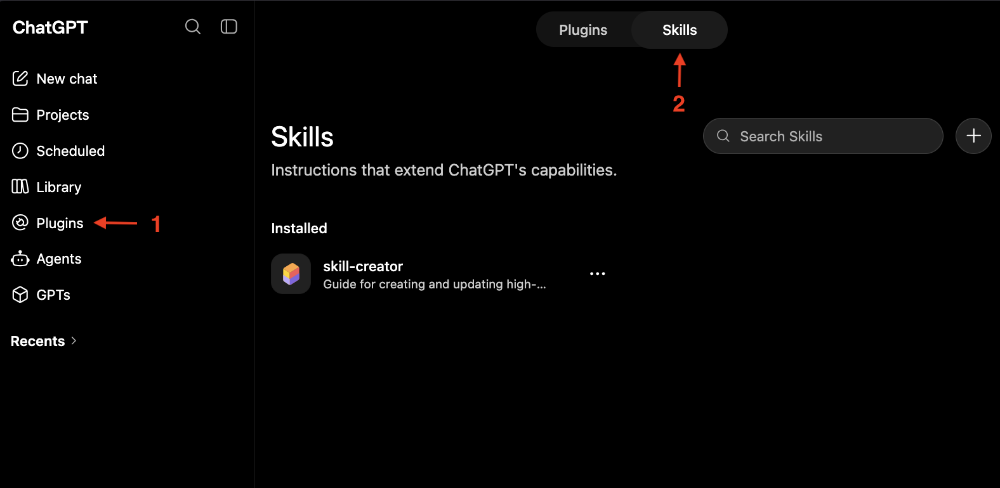

Skills
A skill is a saved procedure — a set of instructions that structures how ChatGPT handles a particular kind of task.
If you've ever asked ChatGPT to do a task with specific steps more than once, to the point where writing the prompt from scratch feels like a chore, it's a good candidate for a skill.
Instead of spelling out the same steps every time, you capture them once. Skills are great for when you want ChatGPT to follow a specific order, rules, or use certain tools.
Creating a skill
A skill is literally just an instruction set, additional files, and a description to help ChatGPT figure out when to use it.
You can manage skills by opening the Plugins page in the sidebar, then selecting the Skills tab.

Open Plugins in the sidebar (1), then the Skills tab (2).
Create a skill by pressing the + button. It is recommended to create a skill via “Create with chat,” but you can also make one manually.
If you choose to create a skill manually, you must provide:
- A name and description that help ChatGPT figure out when to use the skill.
- Skill instructions detailing the workflow, rules, and attached files.
- Any files you want ChatGPT to reference when the skill is used.
Using a skill
In a chat, use the + symbol or type @ and search for the skill you want to use.
Alternatively, if your skill is named and described aptly, ChatGPT will use its own judgement to find and use the skill automatically.